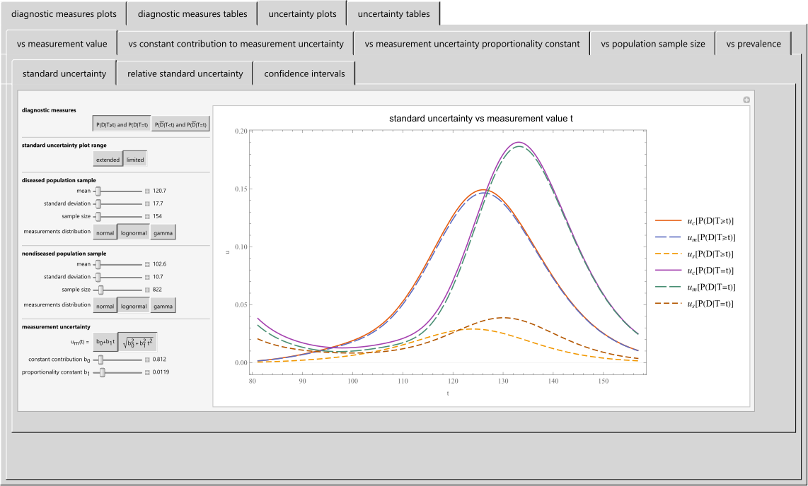
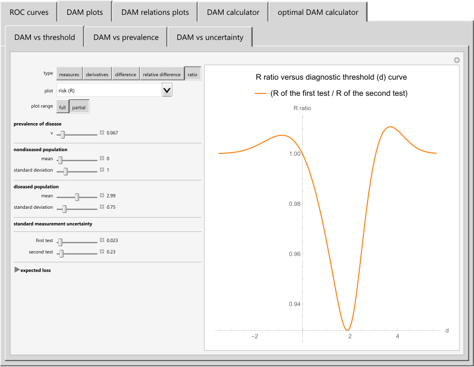

Selected HCSL Publications
A. Bayesian Medical Diagnosis
Chatzimichail T, Hatjimihail AT. A Software Tool for Applying Bayes Theorem in Medical Diagnostics. BMC Med Inform Decis Mak. 2024;24:399.
DOI: 10.1186/s12911-024-02721-x PMID: 39709395 PMCID: PMC11662465
Abstract
Background: In medical diagnostics, estimating post-test or posterior probabilities for disease, positive and negative predictive values, and their associated uncertainty is essential for patient care.
Objective: The aim of this work is to introduce a software tool developed in the Wolfram Language for the parametric estimation, visualization, and comparison of Bayesian diagnostic measures and their uncertainty.
Methods: This tool employs Bayes' theorem to estimate positive and negative predictive values and posterior probabilities for the presence and absence of a disease. It estimates their standard sampling, measurement, and combined uncertainty, as well as their confidence intervals, applying uncertainty propagation methods based on first-order Taylor series approximations. It employs normal, lognormal, and gamma distributions.
Results: The software generates plots and tables of the estimates to support clinical decision-making. An illustrative case study using fasting plasma glucose data from the National Health and Nutrition Examination Survey (NHANES) demonstrates its application in diagnosing diabetes mellitus. The results highlight the significant impact of measurement uncertainty on Bayesian diagnostic measures, particularly on positive predictive value and posterior probabilities.
Conclusion: The software tool enhances the estimation and facilitates the comparison of Bayesian diagnostic measures, which are critical for medical practice. It provides a framework for their uncertainty quantification and assists in understanding and applying Bayes' theorem in medical diagnostics.
Snapshot

Full Text in BMC Medical Informatics and Decision Making
B. Diagnostic Accuracy and Measurement Uncertainty
Chatzimichail T, Hatjimihail AT. A Software Tool for Exploring the Relation between Diagnostic Accuracy and Measurement Uncertainty. Diagnostics 2020;10(9):610.
DOI: 10.3390/diagnostics10090610 PMID: 32825135 PMCID: PMC7555914
Abstract
Screening and diagnostic tests are used to classify people with and without a disease. Diagnostic accuracy measures are used to evaluate the correctness of a classification in clinical research and practice. Although this depends on the uncertainty of measurement, there has been limited research on their relation. The objective for this work is to develop an exploratory tool for the relation between diagnostic accuracy measures and measurement uncertainty, as diagnostic accuracy is fundamental to clinical decision making, while measurement uncertainty is critical to quality and risk management in laboratory medicine. For this reason, a freely available interactive program was developed for calculating, optimizing, plotting and comparing various diagnostic accuracy measures and the corresponding risk of diagnostic or screening tests measuring a normally distributed measurand, applied at a single point in time in non-diseased and diseased populations. This is done for differing prevalence of the disease, mean and standard deviation of the measurand, diagnostic threshold, standard measurement uncertainty of the tests and expected loss. The application of the program is illustrated with a case study of glucose measurements in diabetic and non-diabetic populations, that demonstrates the relation between diagnostic accuracy measures and measurement uncertainty.The application of the program is illustrated with a case study of glucose measurements in diabetic and non-diabetic populations. The program is user-friendly and can be used as an educational and research tool in medical decision-making.
Comment
The Task Group: Analytical Performance Specifications based on Outcomes of the European Federation of Clinical Chemistry and Laboratory Medicine has proposed the above program as a tool 'that could help us inform our clinicians, guideline developers and the IVD industry about the impact of analytical performance on test accuracy and clinical decisions' (Horvath AR, Bell KJL, Ceriotti F, Jones GRD, Loh TP, Lord S, Sandberg S, et al. Outcome-based Analytical Performance Specifications: Current Status and Future Challenges. Clin Chem Lab Med. 2024;62(8):1485-1493. https://doi.org/10.1515/cclm-2024-0125).
Snapshot

C. Statistical Quality Control, Reliability, and Risk
Hatjimihail AT. Estimation of the optimal statistical quality control sampling time intervals using a residual risk measure. PLoS ONE. 2009;4(6):e5770.
DOI: 10.1371/journal.pone.0005770 PMID: 19513124 PMCID: PMC2689359
Abstract
Background: An open problem in clinical chemistry is the estimation of the optimal sampling time intervals for the application of statistical quality control (QC) procedures that are based on the measurement of control materials. This is a probabilistic risk assessment problem that requires reliability analysis of the analytical system, and the estimation of the risk caused by the measurement error.
Methodology/Principal Findings: Assuming that the states of the analytical system are the reliability state, the maintenance state, the critical-failure modes and their combinations, we can define risk functions based on the mean time of the states, their measurement error, and the medically acceptable measurement error. Consequently, a residual risk measure rr can be defined for each sampling time interval. The rr depends on the state probability vectors of the analytical system, the state transition probability matrices before and after each application of the QC procedure and the state mean time matrices. As optimal sampling time intervals can be defined those minimizing a QC related cost measure while the rr is acceptable. I developed an algorithm that estimates the rr for any QC sampling time interval of a QC procedure applied to analytical systems with an arbitrary number of critical-failure modes, assuming any failure time and measurement error probability density function for each mode. Furthermore, given the acceptable rr, it can estimate the optimal QC sampling time intervals.
Conclusions/Significance: It is possible to rationally estimate the optimal QC sampling time intervals of an analytical system to sustain an acceptable residual risk with the minimum QC related cost. For the optimization the reliability analysis of the analytical system and the risk analysis of the measurement error are needed.
Comment
This publication presents a theoretical framework and a symbolic computation algorithm for the optimizing the statistical quality control of an analytical process based on the reliability of the analytical system and the risk of the analytical error.
D. Genetic Algorithms Based Design and Optimization of Statistical Quality Control
Hatjimihail AT. Genetic Algorithms Based Design and Optimization of Statistical Quality Control Procedures. Clin Chem. 1993;39(9):1972-1978
DOI: 10.1093/clinchem/39.9.1972 PMID: 8375083
Abstract
In general, we cannot use algebraic or enumerative methods to optimize a quality control (QC) procedure so as to detect the total allowable analytical error with a stated probability, while the probability for false rejection is minimum. Genetic algorithms (GAs) offer an alternative, as they do not require knowledge of the objective function to be optimized and search through large parameter spaces quickly. To explore the application of GAs in statistical QC, I have developed two interactive computer programs, based on the deterministic crowding genetic algorithm. Given an analytical process, the program "Optimize" optimizes a user defined QC procedure, while the program "Design" designs a novel optimized QC procedure. The programs search through the parameter space and find the optimal or a near-optimal solution. The possible solutions of the optimization problem are evaluated using computer simulation.
Comment
This publication presents the first application of GAs in statistical QC.
Full Text in Clinical Chemistry
Terms of Use
The material made freely available by Hellenic Complex Systems Laboratory is subject to its Terms of Use.